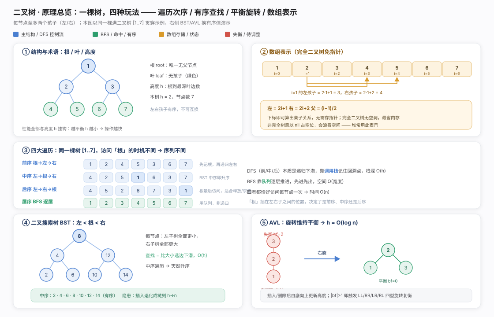
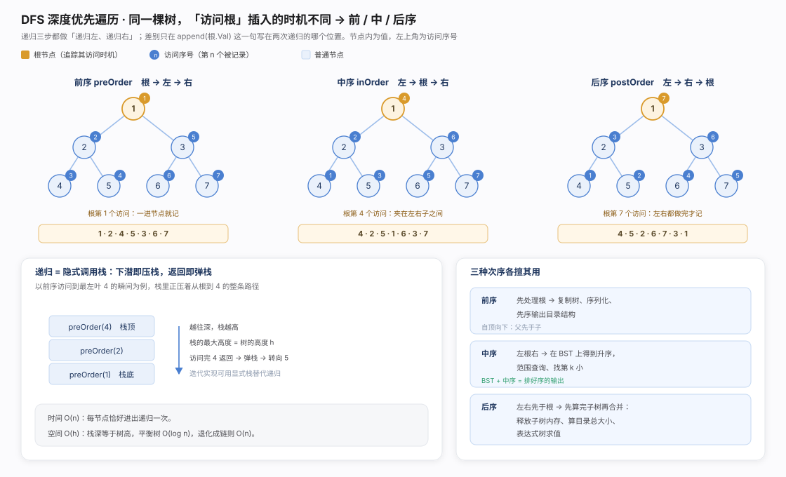
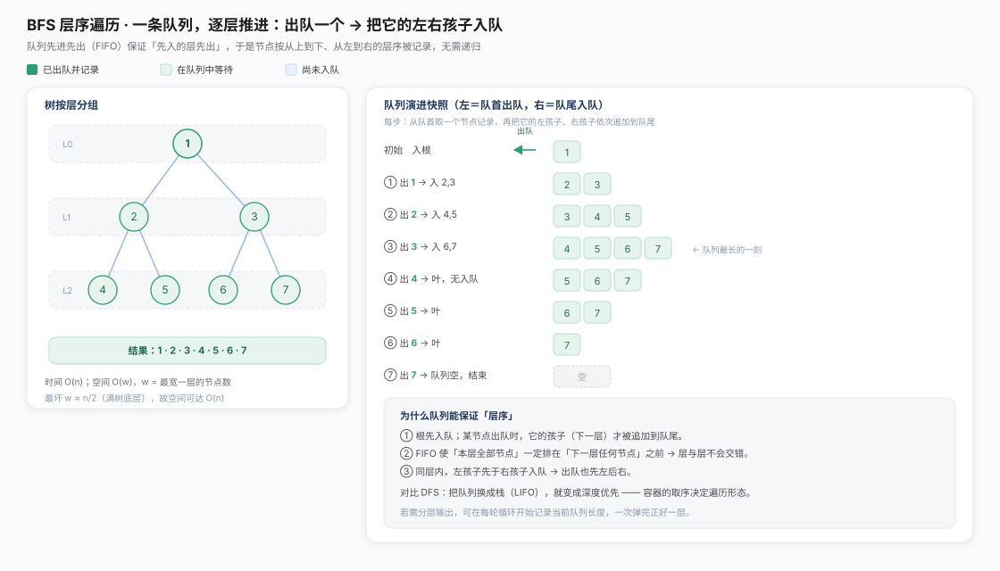
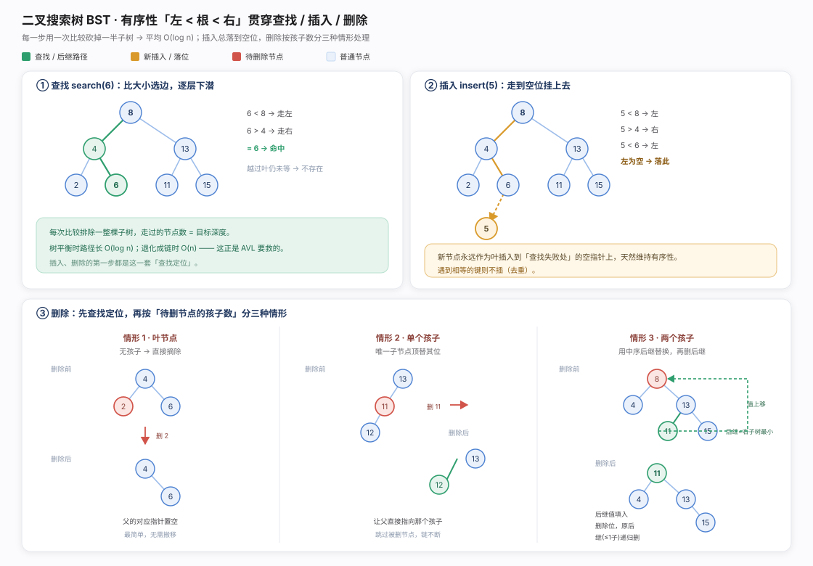
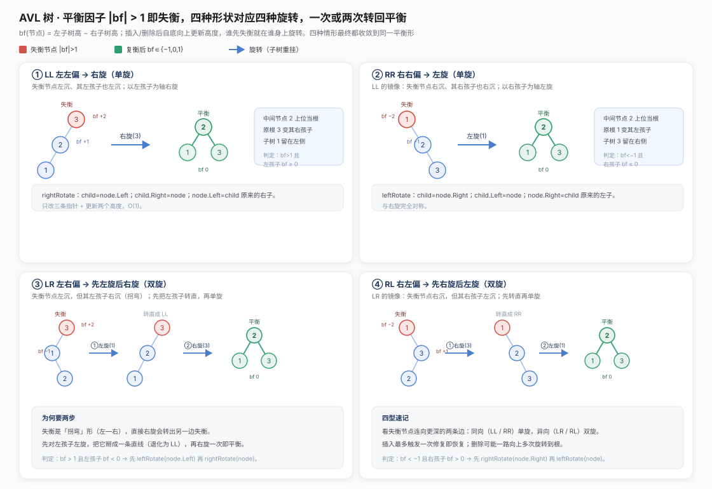
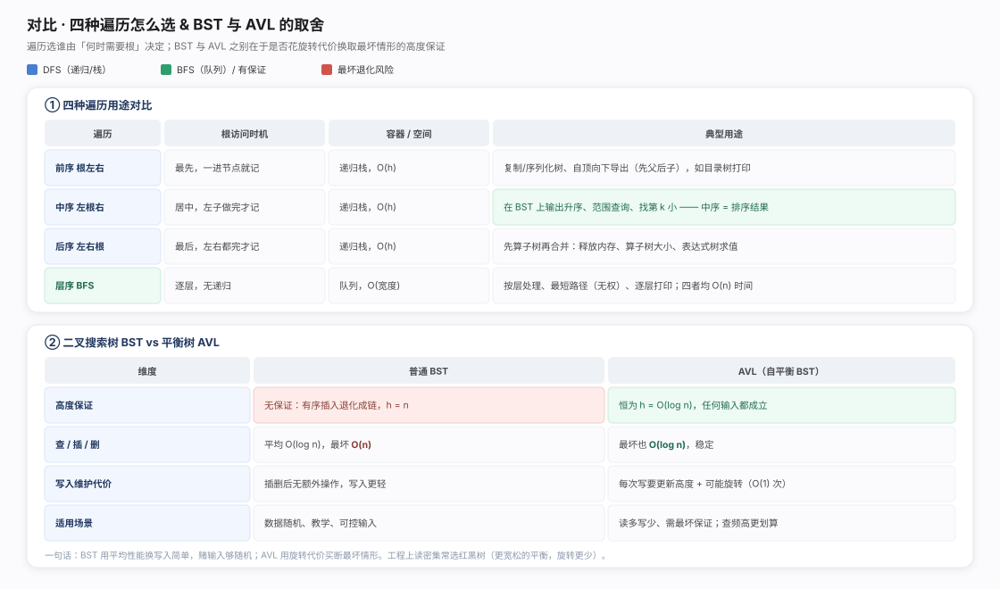

二叉树把数据组织成「每步都能砍掉一半」的形状：每节点至多两孩子、左右有序，故兼得有序数组的二分查找与链表的低成本增删。整个家族围绕两个问题展开：怎么走——DFS 深度优先（靠调用栈回溯，按访问根的时机分前序/中序/后序）与 BFS 层序（靠队列 FIFO 逐层推进）；怎么保持矮——BST 把「左<根<右」写进结构使查找变比较，但有序插入会退化成链（O(log n) 崩回 O(n)），AVL 用旋转堵漏把高度恒压 O(log n)。完全二叉树还可用数组紧凑表示、靠下标算亲子免指针。

DFS 前/中/后序：递归左、递归右两步永远都做，唯 append(根.Val) 写在其前/中/后决定次序；关键盯根被访问的时机（前序一进节点就记、中序夹左右子中间、后序左右子全处理完才记）。本质是隐式调用栈，栈深等于树高，空间 O(h)（平衡 O(log n)、退化 O(n)）；三序时间均 O(n)。用途：前序（先父后子）宜复制/序列化，中序在 BST 上天然升序是范围查询与找第 k 小基础，后序（先子后父）宜子树合并/释放内存/表达式求值。
package chapter_tree
import (
. "helloalgo/pkg"
)
var nums []any
/* 前序遍历 */
func preOrder(node *TreeNode) {
if node == nil {
return
}
// 访问优先级：根节点 -> 左子树 -> 右子树
nums = append(nums, node.Val)
preOrder(node.Left)
preOrder(node.Right)
}
/* 中序遍历 */
func inOrder(node *TreeNode) {
if node == nil {
return
}
// 访问优先级：左子树 -> 根节点 -> 右子树
inOrder(node.Left)
nums = append(nums, node.Val)
inOrder(node.Right)
}
/* 后序遍历 */
func postOrder(node *TreeNode) {
if node == nil {
return
}
// 访问优先级：左子树 -> 右子树 -> 根节点
postOrder(node.Left)
postOrder(node.Right)
nums = append(nums, node.Val)
}
BFS 层序：用队列替代递归——根入队，循环取队首记值、左右孩子入队尾，直到队空。靠FIFO 保证本层节点全排在下一层之前、层不交错。空间峰值取决于最宽一层 O(w)，满二叉树底层约 n/2，故最坏 O(n)。有用对照：队列换成栈（LIFO）层序即变深度优先——遍历形态由「容器与取出顺序」决定。
package chapter_tree
import (
"container/list"
. "helloalgo/pkg"
)
/* 层序遍历 */
func levelOrder(root *TreeNode) []any {
// 初始化队列，加入根节点
queue := list.New()
queue.PushBack(root)
// 初始化一个切片，用于保存遍历序列
nums := make([]any, 0)
for queue.Len() > 0 {
// 队列出队
node := queue.Remove(queue.Front()).(*TreeNode)
// 保存节点值
nums = append(nums, node.Val)
if node.Left != nil {
// 左子节点入队
queue.PushBack(node.Left)
}
if node.Right != nil {
// 右子节点入队
queue.PushBack(node.Right)
}
}
return nums
}
BST 查找/插入/删除：均从查找定位起步——比大小小往左大往右，每步排除整棵子树，路径长等于目标深度，平均 O(log n)。插入查找到空指针处（唯一合法落点）挂新叶（相等则去重）。删除按孩子数分三种：叶节点置空父指针；单孩子让父跳过它直连孩子；双孩子找中序后继（右子树最小节点，右孩子一路向左到底）填入被删位，再删该后继——后继必为叶或单右孩子，necessarily 落回前两种，故删除总收敛。
package chapter_tree
import (
. "helloalgo/pkg"
)
type binarySearchTree struct {
root *TreeNode
}
func newBinarySearchTree() *binarySearchTree {
bst := &binarySearchTree{}
// 初始化空树
bst.root = nil
return bst
}
/* 获取根节点 */
func (bst *binarySearchTree) getRoot() *TreeNode {
return bst.root
}
/* 查找节点 */
func (bst *binarySearchTree) search(num int) *TreeNode {
node := bst.root
// 循环查找，越过叶节点后跳出
for node != nil {
if node.Val.(int) < num {
// 目标节点在 cur 的右子树中
node = node.Right
} else if node.Val.(int) > num {
// 目标节点在 cur 的左子树中
node = node.Left
} else {
// 找到目标节点，跳出循环
break
}
}
// 返回目标节点
return node
}
/* 插入节点 */
func (bst *binarySearchTree) insert(num int) {
cur := bst.root
// 若树为空，则初始化根节点
if cur == nil {
bst.root = NewTreeNode(num)
return
}
// 待插入节点之前的节点位置
var pre *TreeNode = nil
// 循环查找，越过叶节点后跳出
for cur != nil {
if cur.Val == num {
return
}
pre = cur
if cur.Val.(int) < num {
cur = cur.Right
} else {
cur = cur.Left
}
}
// 插入节点
node := NewTreeNode(num)
if pre.Val.(int) < num {
pre.Right = node
} else {
pre.Left = node
}
}
/* 删除节点 */
func (bst *binarySearchTree) remove(num int) {
cur := bst.root
// 若树为空，直接提前返回
if cur == nil {
return
}
// 待删除节点之前的节点位置
var pre *TreeNode = nil
// 循环查找，越过叶节点后跳出
for cur != nil {
if cur.Val == num {
break
}
pre = cur
if cur.Val.(int) < num {
// 待删除节点在右子树中
cur = cur.Right
} else {
// 待删除节点在左子树中
cur = cur.Left
}
}
// 若无待删除节点，则直接返回
if cur == nil {
return
}
// 子节点数为 0 或 1
if cur.Left == nil || cur.Right == nil {
var child *TreeNode = nil
// 取出待删除节点的子节点
if cur.Left != nil {
child = cur.Left
} else {
child = cur.Right
}
// 删除节点 cur
if cur != bst.root {
if pre.Left == cur {
pre.Left = child
} else {
pre.Right = child
}
} else {
// 若删除节点为根节点，则重新指定根节点
bst.root = child
}
// 子节点数为 2
} else {
// 获取中序遍历中待删除节点 cur 的下一个节点
tmp := cur.Right
for tmp.Left != nil {
tmp = tmp.Left
}
// 递归删除节点 tmp
bst.remove(tmp.Val.(int))
// 用 tmp 覆盖 cur
cur.Val = tmp.Val
}
}
/* 打印二叉搜索树 */
func (bst *binarySearchTree) print() {
PrintTree(bst.root)
}
AVL 旋转：每节点算平衡因子 bf = 左高 − 右高，|bf| > 1 即失衡须旋转。旋转是纯指针重挂（右旋左孩子上位、左旋对称），仅改三指针加更新两高度，O(1)；写入后沿回溯路径自底向上更新高度，遇首个失衡节点就地修复。按失衡两条边方向分四型：同向 LL/RR 用单旋（LL 右旋、RR 左旋）；异向 LR/RL 是拐弯形，须先对孩子转一次掰直退化成 LL/RR 再单旋，故双旋。代价是每次写入多花高度更新与至多常数次旋转，换来任何输入下高度恒 O(log n)（插入至多一次修复，删除可能一路旋到根）。
package chapter_tree
import . "helloalgo/pkg"
/* AVL 树 */
type aVLTree struct {
// 根节点
root *TreeNode
}
func newAVLTree() *aVLTree {
return &aVLTree{root: nil}
}
/* 获取节点高度 */
func (t *aVLTree) height(node *TreeNode) int {
// 空节点高度为 -1 ，叶节点高度为 0
if node != nil {
return node.Height
}
return -1
}
/* 更新节点高度 */
func (t *aVLTree) updateHeight(node *TreeNode) {
lh := t.height(node.Left)
rh := t.height(node.Right)
// 节点高度等于最高子树高度 + 1
if lh > rh {
node.Height = lh + 1
} else {
node.Height = rh + 1
}
}
/* 获取平衡因子 */
func (t *aVLTree) balanceFactor(node *TreeNode) int {
// 空节点平衡因子为 0
if node == nil {
return 0
}
// 节点平衡因子 = 左子树高度 - 右子树高度
return t.height(node.Left) - t.height(node.Right)
}
/* 右旋操作 */
func (t *aVLTree) rightRotate(node *TreeNode) *TreeNode {
child := node.Left
grandChild := child.Right
// 以 child 为原点，将 node 向右旋转
child.Right = node
node.Left = grandChild
// 更新节点高度
t.updateHeight(node)
t.updateHeight(child)
// 返回旋转后子树的根节点
return child
}
/* 左旋操作 */
func (t *aVLTree) leftRotate(node *TreeNode) *TreeNode {
child := node.Right
grandChild := child.Left
// 以 child 为原点，将 node 向左旋转
child.Left = node
node.Right = grandChild
// 更新节点高度
t.updateHeight(node)
t.updateHeight(child)
// 返回旋转后子树的根节点
return child
}
/* 执行旋转操作，使该子树重新恢复平衡 */
func (t *aVLTree) rotate(node *TreeNode) *TreeNode {
// 获取节点 node 的平衡因子
// Go 推荐短变量，这里 bf 指代 t.balanceFactor
bf := t.balanceFactor(node)
// 左偏树
if bf > 1 {
if t.balanceFactor(node.Left) >= 0 {
// 右旋
return t.rightRotate(node)
} else {
// 先左旋后右旋
node.Left = t.leftRotate(node.Left)
return t.rightRotate(node)
}
}
// 右偏树
if bf < -1 {
if t.balanceFactor(node.Right) <= 0 {
// 左旋
return t.leftRotate(node)
} else {
// 先右旋后左旋
node.Right = t.rightRotate(node.Right)
return t.leftRotate(node)
}
}
// 平衡树，无须旋转，直接返回
return node
}
/* 插入节点 */
func (t *aVLTree) insert(val int) {
t.root = t.insertHelper(t.root, val)
}
/* 递归插入节点（辅助函数） */
func (t *aVLTree) insertHelper(node *TreeNode, val int) *TreeNode {
if node == nil {
return NewTreeNode(val)
}
/* 1. 查找插入位置并插入节点 */
if val < node.Val.(int) {
node.Left = t.insertHelper(node.Left, val)
} else if val > node.Val.(int) {
node.Right = t.insertHelper(node.Right, val)
} else {
// 重复节点不插入，直接返回
return node
}
// 更新节点高度
t.updateHeight(node)
/* 2. 执行旋转操作，使该子树重新恢复平衡 */
node = t.rotate(node)
// 返回子树的根节点
return node
}
/* 删除节点 */
func (t *aVLTree) remove(val int) {
t.root = t.removeHelper(t.root, val)
}
/* 递归删除节点（辅助函数） */
func (t *aVLTree) removeHelper(node *TreeNode, val int) *TreeNode {
if node == nil {
return nil
}
/* 1. 查找节点并删除 */
if val < node.Val.(int) {
node.Left = t.removeHelper(node.Left, val)
} else if val > node.Val.(int) {
node.Right = t.removeHelper(node.Right, val)
} else {
if node.Left == nil || node.Right == nil {
child := node.Left
if node.Right != nil {
child = node.Right
}
if child == nil {
// 子节点数量 = 0 ，直接删除 node 并返回
return nil
} else {
// 子节点数量 = 1 ，直接删除 node
node = child
}
} else {
// 子节点数量 = 2 ，则将中序遍历的下个节点删除，并用该节点替换当前节点
temp := node.Right
for temp.Left != nil {
temp = temp.Left
}
node.Right = t.removeHelper(node.Right, temp.Val.(int))
node.Val = temp.Val
}
}
// 更新节点高度
t.updateHeight(node)
/* 2. 执行旋转操作，使该子树重新恢复平衡 */
node = t.rotate(node)
// 返回子树的根节点
return node
}
/* 查找节点 */
func (t *aVLTree) search(val int) *TreeNode {
cur := t.root
// 循环查找，越过叶节点后跳出
for cur != nil {
if cur.Val.(int) < val {
// 目标节点在 cur 的右子树中
cur = cur.Right
} else if cur.Val.(int) > val {
// 目标节点在 cur 的左子树中
cur = cur.Left
} else {
// 找到目标节点，跳出循环
break
}
}
// 返回目标节点
return cur
}
选遍历，问「何时需要根」：先父后子（复制/序列化）用前序；有序输出且为 BST 用中序；先算完子树再汇总（求值/释放/算规模）用后序；按层推进或无权最短路用层序 BFS。四者时间均 O(n)，区别在容器（栈 vs 队列）与空间（O(h) vs O(宽度)）。选结构，问「能否容忍最坏情形」：BST 实现简单、写入无额外开销，但赌输入随机，有序插入即退化 O(n)；AVL 以写入的高度更新与旋转代价买断「最坏也 O(log n)」，宜读多写少且需性能下限。写入频繁常改红黑树——平衡约束更宽松、旋转更少，是取舍线上的折中点。详见对比图。